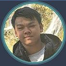

Web Development
Building responsive websites using HTML, CSS and JavaScript, with a focus on usability and accessibility.

Interactive Media & Game Design Student
I'm an Interactive Media student at the University of the Witwatersrand with interests in web development, game design, and user experience design.
Through my studies and personal projects, I enjoy creating digital experiences that combine creativity, technology, and thoughtful interaction design.
Building responsive websites using HTML, CSS and JavaScript, with a focus on usability and accessibility.
Designing mechanics, player experiences, level layouts and interactive systems.
Exploring digital storytelling, user interaction and multimedia experiences.
Creating wireframes, prototypes and interfaces that improve user experience.
Improving my understanding of modern JavaScript and interactive web applications.
Exploring gameplay systems, level design and scripting with C#.
Learning how research and usability testing improve digital products.
I enjoy creating responsive websites that combine clean design with meaningful interactions.
Designing mechanics and gameplay systems allows me to explore creativity and problem solving in unique ways.
Understanding how people interact with digital products helps me create more intuitive and engaging experiences.
Developing advanced web projects, game prototypes, and interactive experiences while preparing for graduate opportunities.
Worked on interaction design, web development, and game design projects through university coursework.
Built foundational skills in design thinking, digital media production and web technologies.
University of the Witwatersrand
Began exploring web development, design principles, interactive media production, and digital storytelling.
I believe successful digital experiences begin with a clear understanding of the user. Whether I'm developing a website, designing a game mechanic, or building an interactive prototype, I focus on balancing creativity with functionality.
My process typically involves research, planning, prototyping, testing, and refinement. This allows me to build projects that are both engaging and technically sound.
As an Interactive Media student, my goal is to continue developing my skills across web development, game design, and user experience design.
I am particularly interested in opportunities where creativity and technology intersect, allowing me to contribute to meaningful digital products while continuing to learn and grow as a practitioner.
Outside of coursework and development projects, I enjoy exploring emerging technologies, analysing game design, learning new creative tools and keeping up with developments in the tech industry.
I'm open to graduate opportunities, internships, and collaborative projects.
Contact Me →